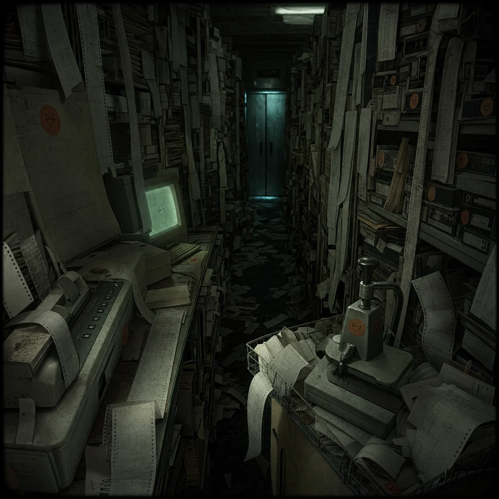

Behind the office copier is a door too narrow for a person and too wide for a secret. You turn sideways and enter a vault of receipts, printouts, screenshots, tarot notes, invoices, and unlabeled cassette tapes.
None of the files agree on what happened. All of them agree that something happened. A fox has drawn orange circles around every contradiction, then written: TRUTH IS A PATTERN, NOT A VOLUME SLIDER.
The index cards are filed by feeling: ANGER, CARE, PROOF, POSSESSION, NO. The drawer marked "revenge" is empty.
stamp the receipt vault index